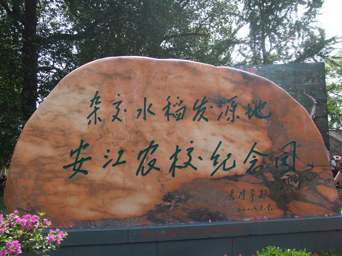
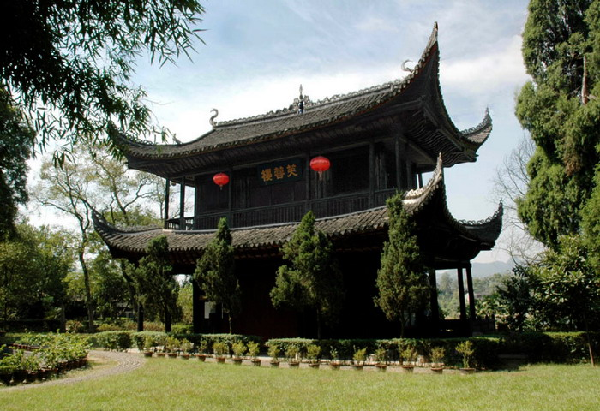
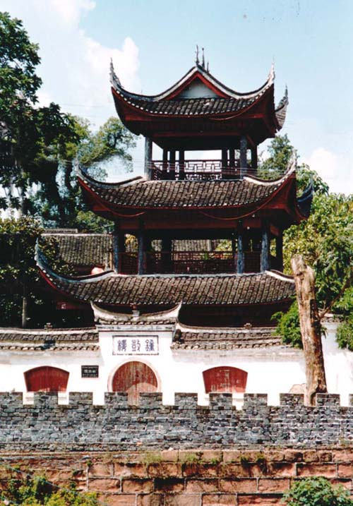

XXX概况
XXX历史悠久。今之XXX，战国属楚地，秦为黔中郡地。西汉高祖五年(公元前202)，置镡成县，县治在黔阳西南，属武陵郡。东汉、三国因之。东晋义熙年间(405至418)，废镡成县并入舞阳县，舞阳治(今芷江)迁镡成，并改为镡城。南北朝：齐建元元年(479)，舞阳改为沅阳，仍属武陵郡。梁改沅阳为龙标县，隶属南阳郡。陈武帝永定三年(559)，改属沅陵郡。

XXX旅游概况
XXX山川秀丽，风光旖旎，环境优美，名胜古迹、自然景观甚多，尤其有“楚南上游第一胜地”之美誉的黔城，是一个有着二千多年历史的古镇，古镇内有芙蓉楼、南正街、万寿宫、中正门、钟鼓楼等游览胜地。还有以岩鹰洞、“白吊水”为主体的龙船塘旅游区，是一个集天然森林与七大自然景观为一体的风景名胜区。当年接待海内外游客6万人次，旅游创汇10万美元。


-
XXX历史
XXX历史悠久。今之XXX，战国属楚地，秦为黔中郡地。西汉高祖五年(公元前202)，置镡成县，县治在黔阳西南，属武陵郡
-
XXX经济
全市建有自然环境保护区1个，保护区面积12341公顷。全年人工造林面积36800公顷，退耕还林267公顷。
-
XXX资源
XXX土地总面积2164.4平方公里，其中：耕地面积26493公顷，园地面积13342.13公顷，林地面积14278.33公顷，牧草地面积51.8公顷，居民点及工矿用地面积5222.27公顷，交通用地面积969.14公顷，水域面积8276.57公顷，未利用土地面积19334.09公顷。
-
XXX地理
XXX位于湖南省西部，沅水上游，云贵高原东部边缘的雪峰山区，东接溆浦、洞口，南邻绥宁、会同，西界芷江，北依怀化。地理座标：东经109°32’至11031，北纬265°91’至27°29'。